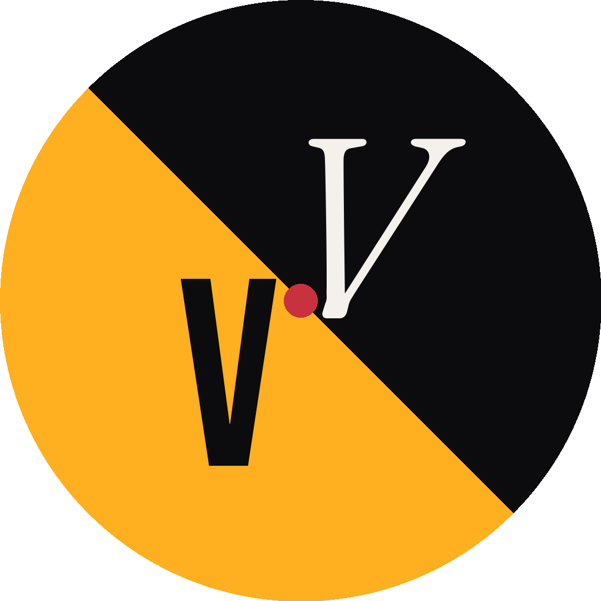
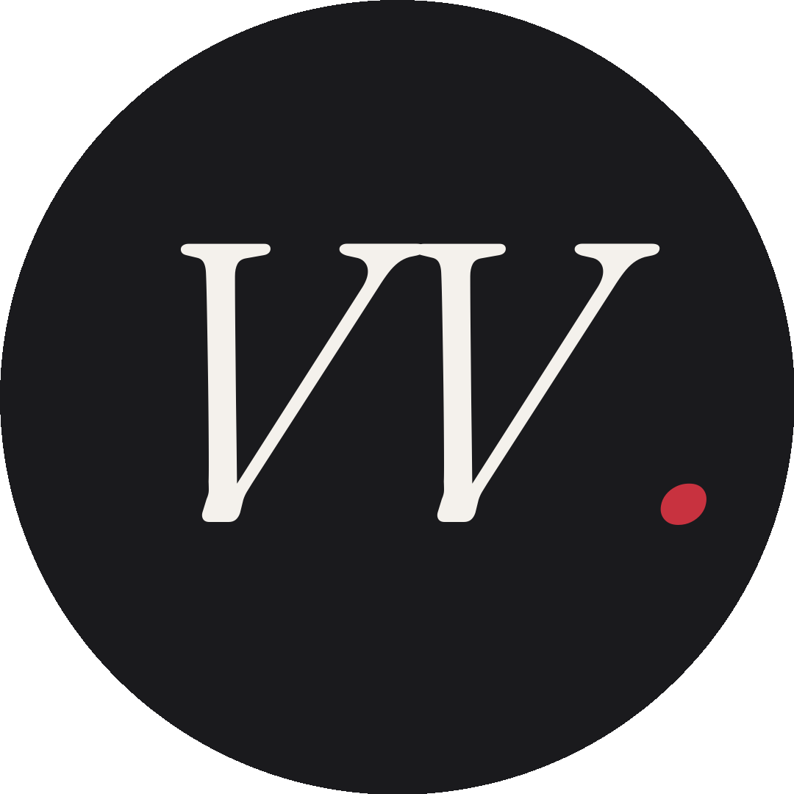
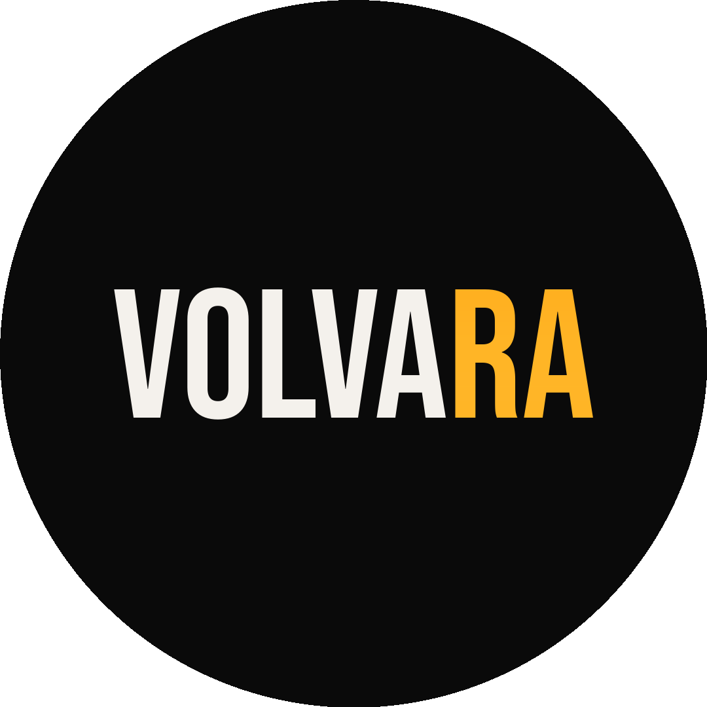

Plano completo para o perfil @volvara.pt — perfil unificado que serve Volvara (Quick) e Volvara Studio. Grid em diptych vertical, conteúdo planeado, calendário, highlights.
Cada uma comunica algo diferente. A marca tem dois lados — a foto deve sugerir isso ou ser deliberadamente neutra.

Metade carbon com V italic Fraunces (Studio) + metade amber com V Bebas Neue (Quick) + ponto burgundy ao centro. Comunica os 2 lados visualmente.

Fundo graphite com VV italic Fraunces cream + ponto burgundy. Elegante, premium, neutro entre Quick e Studio.

Logo principal · VOLVA cream + RA filled amber gradient sobre preto. Fiel à identidade do Quick mas pode parecer too Quick.
Recomendação: Versão B · neutra, premium, comunica evolução da marca sem tomar partido. Quick lado funciona. Studio lado funciona. Cliente HNW não vê "agência amarela".
A bio actual é confusa, mistura mensagens Quick com toques genéricos e tem emojis baratos (📍 ⚡) que envelhecem o perfil. Proposta limpa.
Volvara (não "Volvara Web Agency")
Design Agency
volvara.pt (homepage que serve os 2 produtos)
Coluna esquerda sempre Studio · coluna direita sempre Quick · coluna central institucional. Cliente que aterra no perfil percebe imediatamente os dois lados da marca.
Três posts por categoria. Coerência de paleta dentro de cada coluna. Mensagem distinta por post.
Logo elegante · cream sobre carbon · ponto burgundy. Anúncio do Studio como branch editorial.
Frase-âncora · Fraunces italic large · "uma obsessão" em burgundy. A promessa do Studio.
Mono small caps · subtitle premium · selectividade sem exclusividade.
Símbolo isolado em fundo neutro · highlight conceptual · marca registada visual.
Split visual · explica os dois produtos · ajuda visitante a escolher.
Lugar de trabalho · onde · para quem · sem geográficar a marca em excesso.
Bebas Neue grande · "à tua" amber + "MEDIDA." crimson. Manifesto do Quick.
Process timeline visual · 4 fases · dias e não semanas.
Mensagem core do Quick · "vês antes de pagares" · zero risco.
Highlights são a "navegação" do perfil para visitantes novos. Cada um com cover dedicado de 110×110 que reflecte a paleta do conteúdo.
Demos · before/after · casos rápidos
Studies · processo editorial · anchor frase
4 fases · stories explicativas com diagramas
Mariana · Super Stars · clientes live
Filosofia · vê-antes-de-pagar · FAQ
Início após feriados · 5 Maio (segunda). Posts agendados, ritmo coerente, mistura entre Quick / Studio / institucional. Posts livres acima destes 9 (clientes live, novidades) seguem regra de coluna.
Posts livres (clientes live, novidades) interrompem este calendário se necessário · respeitando sempre a regra de coluna (Studio esquerda · centro institucional · Quick direita).
Distribuído entre 5 e 8 de Maio. Cada sessão tem objectivo claro, output mensurável, sem ambiguidade.
Studio esquerda. Quick direita. Institucional centro. Mesmo um post de cliente live (Mariana, Super Stars) respeita a coluna do produto que serviu — Mariana é Quick (post na direita), Super Stars CTPP é Quick (direita). Studio só terá posts livres quando houver clientes Studio reais.
Bebas Neue + DM Mono = Quick. Fraunces italic + DM Mono = Studio. Mistura nunca. Visitante reconhece o produto pela fonte antes de ler o copy.
PT-PT estrito (não brasileiro). AO1990. Sem "você", sem "selecção", sem "atualidade" = "actualidade". Inglês quando justifica (subtitles editoriais ou frases globais). Nunca os dois no mesmo post.
Em qualquer post (Quick ou Studio), há sempre uma forma sutil de comunicar que o cliente vê o trabalho antes de se comprometer. Não como slogan repetitivo — como filosofia que aparece em diferentes formas (texto, ícone, processo, garantia).